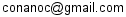

국내 거래소
- 가격 단위는 원(KRW) 입니다.
- 24 시간 변동폭은 Bithumb 기준입니다.
국내 거래소 가격차이
Global 가격 비교
- binance arbitrage:
- binance arbitrage는 binance와 bithumb간에 코인별 가격차를 이용해 가능한 재정거래의 최대값을 나타냅니다.
- 김프1 = (bithumb - coinmarket) / coinmarket
- 김프2 = (bithumb - binance) / binance
- binance 가격 계산시 1 USD = 1000 원으로 계산하고 있어서 실제 가격과 약간의 오차가 있을수 있습니다. coinmarket은 KRW가격을 제공합니다.
문의
- Email: 
- Donate with Bitcoin: 19pCMBYLW1FDh5uNBbDudz6pmL2WnPi1op